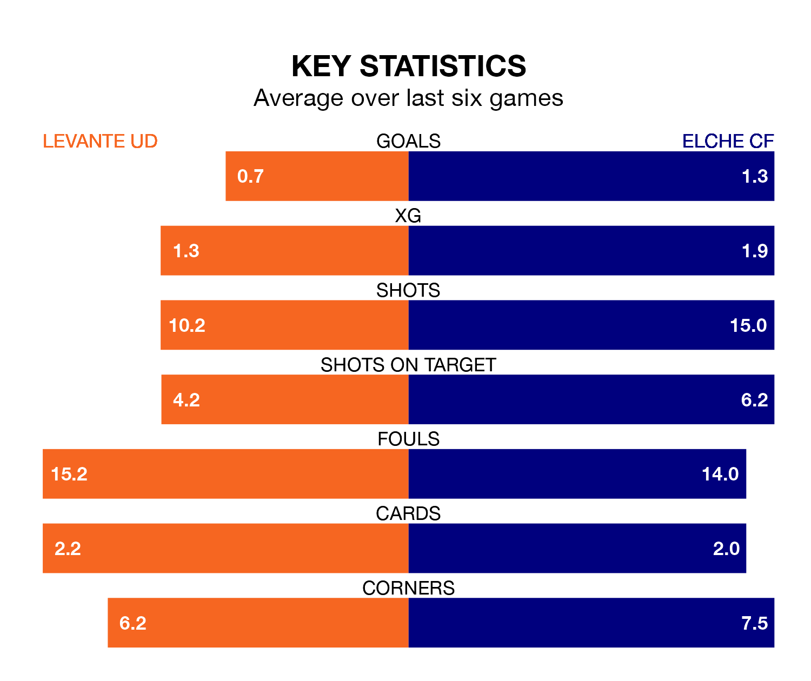

Elche CF visit Levante UD at the Estadio Ciudad de Valencia on late Sunday on the back of four consecutive wins in the Segunda División.
Elche have picked up 13 points from their last six games, and they face a Levante side who have lost their last two matches, and collected seven points from the last possible 18.
Elche are second in the table after 31 games, of which they have won 15 and drawn eight, earning 53 points.
Levante are nine places behind the away side in 11th, with 10 wins and 14 draws putting them on 44 points.
In the last 10 years, Levante and Elche have played each other on 10 occasions. Levante won three of them, Elche two, and they drew five times.
On average, Levante scored 0.9 goals and Elche 0.6 in those matches.
Their last meeting was on September 30, when they played out a 0-0 draw.
With 33 goals in 31 games so far this season, Elche are scoring at the league's average rate with 1.1 goals per game. And they are conceding fewer than average, letting in 25 goals at a rate of 0.8 per game.
The hosts, meanwhile, are above average scorers, with 1.2 goals per game. They have conceded 1.1 goals per game.
With Andrés Fernández between the sticks, Levante can rely on one of the league's safest pair of hands. He has kept 12 clean sheets in his 23 appearances this season in the Segunda División.
In Elche's net, Matías Ezequiel Dituro has eight clean sheets in 10 games.
Levante's last match was on March 16, a 1-1 draw against Burgos CF, with Roger Brugué Ayguadé getting the goal for Levante.
Elche beat Albacete Balompié 3-2 last time out, on March 17, with Morad Daoudi El Ghezouani, Nicolás Fernández and Tete Morente on the scoresheet.
Sunday's match will be refereed by Oliver De La Fuente Ramos, who has taken charge of 15 Segunda División games so far this season, issuing five red cards and booking 74 players. He has awarded five penalties.
The last Levante game De La Fuente Ramos refereed was a 0-0 home draw with Leganés on February 9. His last Elche match was their 1-0 win away at FC Andorra on January 28.
Updated: 10:19 (UTC), 22/03/24